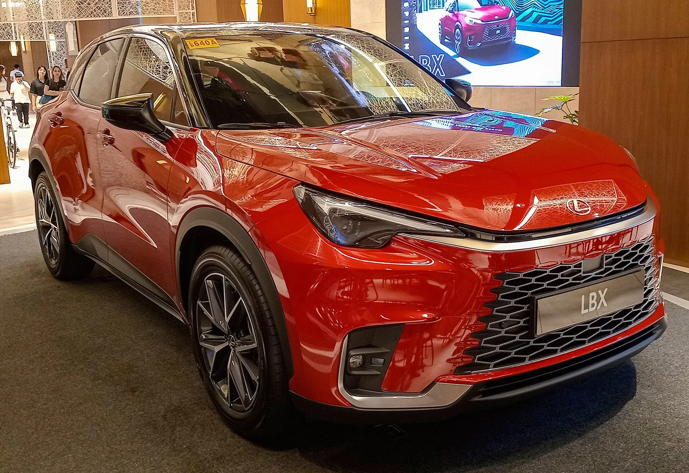
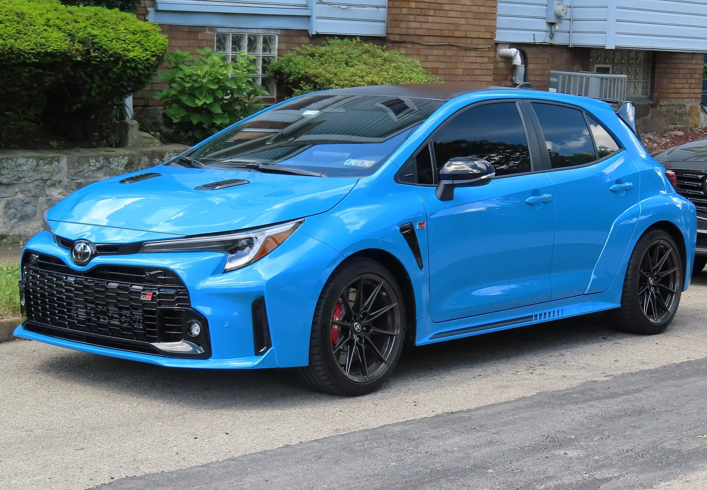
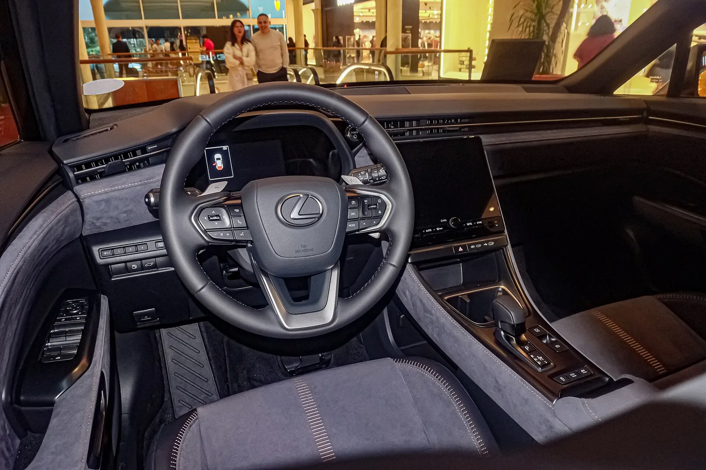

▲ 매장에 전시된 렉서스 LBX. 모리조 RR 익스트림 버전은 이 소형 크로스오버를 기반으로 한 렉서스의 가장 극단적인 고성능 모델이 될 전망이다
1. 위장막 속에 숨겨진 카본 파이버 루프
렉서스가 2024년 출시한 고성능 소형 크로스오버 'LBX 모리조 RR'의 한층 더 극단적인 버전을 개발 중이라는 소식이 전해졌다. 해외 매체 카스쿱스가 공개한 스파이샷에 따르면, 최신 프로토타입은 검은색과 흰색이 뒤섞인 독특한 위장 도색을 두르고 있는데, 이는 차체 패널 아래 카본 파이버 루프가 숨겨져 있음을 암시하는 전형적인 위장 패턴이다.
루프뿐 아니라 번호판 주변에서도 카본 파이버 소재로 추정되는 범퍼 하단부가 노출된 모습이 포착됐다. 새롭게 적용될 것으로 보이는 리어 스포일러 역시 카본 파이버로 제작될 가능성이 거론된다.
▲ 현행 렉서스 LBX 전측면. 익스트림 버전은 카본 파이버 루프와 범퍼 등으로 한층 강화된 경량화 사양을 갖출 것으로 보인다 ⓒ Wikimedia Commons
2. 경량화에 집중한 개발 방향
이번 프로토타입에서 드러난 변화의 공통점은 '경량화'다. 루프, 범퍼, 스포일러까지 차체 곳곳에 카본 파이버 소재를 적용하는 것은 출력을 무리하게 끌어올리기보다 무게를 덜어내 민첩성을 높이는 전통적인 고성능 튜닝 방식에 가깝다. 이는 렉서스가 LBX 모리조 RR을 '작지만 예리한' 고성능 모델로 완성하려는 방향성과 맞닿아 있다.
📍 참고로 알아두면 좋은 것
'모리조(Morizo)'는 토요타 아키오 회장이 레이싱 드라이버로 활동할 때 사용하는 별명이다. 토요타·렉서스는 모리조가 직접 개발과 테스트에 참여한 고성능 모델에 이 이름을 붙이는데, GR 야리스 모리조 에디션, GR 코롤라 모리조 에디션에 이어 LBX 모리조 RR까지 이어지고 있다.
3. GR 코롤라와 더 많은 것을 공유하게 될까
카스쿱스는 이번 보도에서 "두 모델이 미래에 더 많은 공통점을 가질 것으로 보인다"고 언급하며, 카본 루프가 이미 상급 트림 GR 코롤라에 쓰이는 소재라는 점을 짚었다. LBX 모리조 RR은 애초에 GR 코롤라와 부품을 상당 부분 공유하는 것으로 알려져 있는데, 이번 익스트림 버전에서는 그 공유 폭이 한층 넓어질 가능성이 있다는 해석이다.

▲ 토요타 GR 코롤라 서킷 에디션. LBX 모리조 RR 익스트림 버전은 이 차와 카본 파이버 부품을 포함한 공통 요소를 더 많이 나눠 가질 것으로 보인다 ⓒ Wikimedia Commons
4. 기존 모리조 RR의 파워트레인은?
기존 LBX 모리조 RR은 터보 1.6L 3기통 엔진을 얹어 300마력(224kW, 304PS), 최대토크 400Nm(295lb-ft)를 낸다. 변속기는 8단 자동 또는 6단 수동 중 선택할 수 있으며, 상시 사륜구동을 갖춰 정지 상태에서 시속 100km까지 5.2초 만에 도달한다. 익스트림 버전이 이 파워트레인을 그대로 유지할지, 아니면 GR 코롤라 상급 트림 수준으로 출력을 더 끌어올릴지는 아직 공식 확인되지 않았다.
| 항목 | 사양 |
|---|---|
| 엔진 | 터보 1.6L 직렬 3기통 |
| 최고출력 | 300마력(224kW) |
| 최대토크 | 400Nm |
| 변속기 | 8단 자동 / 6단 수동 |
| 구동방식 | 상시 4WD |
| 0-100km/h | 5.2초 |
렉서스의 고성능 모델 관련 소식은 렉서스 공식 홈페이지에서 확인할 수 있다. 바로가기
5. 출시 시기와 전망
구체적인 출시 시기는 아직 명시되지 않았지만, 위장막을 두른 주행 테스트가 포착된 만큼 개발이 상당 부분 진행된 단계로 풀이된다. LBX 모리조 RR 익스트림 버전이 실제로 양산된다면, 소형 크로스오버 세그먼트에서 카본 파이버 소재를 이 정도로 적극 활용하는 사례로는 이례적이라는 평가가 나온다. 렉서스가 준비해온 고성능 서브 브랜드 전략의 정점이 될 가능성도 거론된다.
✅ LBX 모리조 RR 익스트림, 이것만은 확인하세요
· 위장 프로토타입에서 카본 파이버 루프·범퍼 흔적 최초 포착
· 경량화 중심 개발, GR 코롤라와의 부품 공유 폭 확대 가능성
· 기존 모리조 RR은 300마력 터보 1.6L 3기통, 0-100km/h 5.2초
· 익스트림 버전의 정확한 파워트레인·출력은 미공개
· 구체적 출시 시기는 아직 발표되지 않음

▲ 렉서스 LBX 실내. 모리조 RR 익스트림 버전은 경량화를 위해 실내 마감재에도 변화를 줄 가능성이 있다 ⓒ Wikimedia Commons
6. 정리
렉서스 LBX 모리조 RR의 익스트림 버전은 카본 파이버 루프와 범퍼를 앞세운 경량화 전략으로 개발되고 있는 것으로 보인다. GR 코롤라와의 부품 공유 폭이 넓어질 것이라는 관측도 나오는 만큼, 소형 크로스오버 세그먼트에서 가장 극단적인 고성능 모델로 완성될 가능성이 크다. 다만 정확한 파워트레인 사양과 출시 시기는 아직 공식화되지 않아 추가 정보를 기다려야 한다.